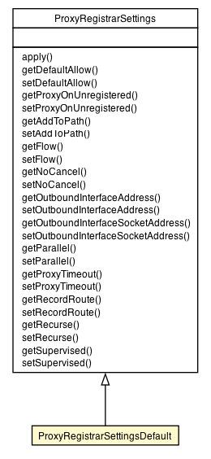

org.vorpal.blade.framework.config.Configuration
org.vorpal.blade.services.proxy.registrar.ProxyRegistrarSettings
org.vorpal.blade.services.proxy.registrar.ProxyRegistrarSettingsDefault
org.vorpal.blade.framework.config.Configuration
org.vorpal.blade.services.proxy.registrar.ProxyRegistrarSettings
org.vorpal.blade.services.proxy.registrar.ProxyRegistrarSettingsDefault
|
|||||||||
| PREV CLASS NEXT CLASS | FRAMES NO FRAMES | ||||||||
| SUMMARY: NESTED | FIELD | CONSTR | METHOD | DETAIL: FIELD | CONSTR | METHOD | ||||||||

java.lang.Object
public class ProxyRegistrarSettingsDefault
| Field Summary |
|---|
| Fields inherited from class org.vorpal.blade.services.proxy.registrar.ProxyRegistrarSettings |
|---|
addToPath, defaultAllow, flow, noCancel, outboundInterfaceAddress, outboundInterfaceSocketAddress, parallel, proxyOnUnregistered, proxyTimeout, recordRoute, recurse, supervised |
| Fields inherited from class org.vorpal.blade.framework.config.Configuration |
|---|
logging |
| Constructor Summary | |
|---|---|
ProxyRegistrarSettingsDefault()
|
|
| Method Summary |
|---|
| Methods inherited from class org.vorpal.blade.services.proxy.registrar.ProxyRegistrarSettings |
|---|
apply, getAddToPath, getDefaultAllow, getFlow, getNoCancel, getOutboundInterfaceAddress, getOutboundInterfaceSocketAddress, getParallel, getProxyOnUnregistered, getProxyTimeout, getRecordRoute, getRecurse, getSupervised, setAddToPath, setDefaultAllow, setFlow, setNoCancel, setOutboundInterfaceAddress, setOutboundInterfaceSocketAddress, setParallel, setProxyOnUnregistered, setProxyTimeout, setRecordRoute, setRecurse, setSupervised |
| Methods inherited from class org.vorpal.blade.framework.config.Configuration |
|---|
getLogging, setLogging |
| Methods inherited from class java.lang.Object |
|---|
clone, equals, finalize, getClass, hashCode, notify, notifyAll, toString, wait, wait, wait |
| Constructor Detail |
|---|
public ProxyRegistrarSettingsDefault()
|
|||||||||
| PREV CLASS NEXT CLASS | FRAMES NO FRAMES | ||||||||
| SUMMARY: NESTED | FIELD | CONSTR | METHOD | DETAIL: FIELD | CONSTR | METHOD | ||||||||